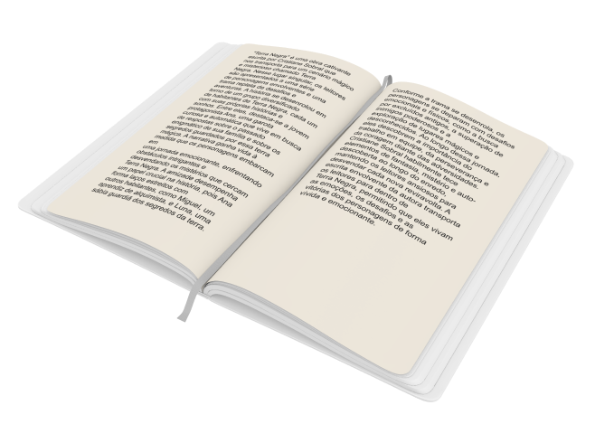
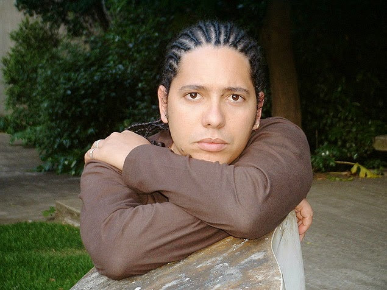

Bom dia, camaradas
Bom Dia, Camaradas é um livro escrito por Ondjaki, um renomado autor
angolano. A obra retrata a infância do autor em Luanda, capital de
Angola, durante a época de transição política e social do país. O
livro aborda temas como amizade, descobertas, mudanças culturais e o
impacto da guerra civil angolana. É uma narrativa poética e nostálgica
que mergulhou nas experiências do autor e dos seus camaradas de
infância.
Compre na Amazon
Contexto
Se passa em Luanda na capital da Angola sob a perspectiva de um menino
que está entre a infância e a adolescência, e mostrando a relação dele
com a família, amigos, funcionários da família, porque se trata de uma
família de classe média na capital Angolana. Entre esses funcionários
têm um que ele é bem apegado, que se chama Antônio, onde ele sempre o
comprimenta chamando-o de Camarada, onde todos os dias ele fala Bom
dia, Camarada. Várias pessoas se cumprimentam assim muito
provavelmente pelo grupo que fez a Independência da Angola,
independência do País, um grupo de Esquerda, inclusive eles tem
professores Cubanos nas escolas, então muito provavelmente eles tem
esse vocabulário Camarada que é uma postura de esquerda. Tudo vai
acontecer nós anos 70 para 80 em situações contrastantes em Angola,
temos de um lado um País que finalmente ficou livre de Portugal e que
vive seus primeiros anos de independência em 75 depois de um batalha
interna, não só com Portugal, mais com grupos que queriam administrar
o País, a mpla é a que vence, que é um grupo de Esquerda que toma o
poder e é unipartidário. E essa alegria por essa independência monstra
alguns problemas com o novo regime implantado, um deles é o
racionamento, o governo controla tudo com cartões, onde não pode
comprar tudo que querem, porque a ideia é que todo mundo tenha acesso,
entre outras coisas, como o ter que sair do carro quando o presidente
está passando.
Curiosidades
-
Tem uma lenda urbana que é a do Caixão Vazio, isso seria um grupo
de estrangeiros que sem aviso algum chegavam nós lugares e
destruíram, roubavam, estrupavam, assediavam, além de cortarem as
suas genitais para expor em lugares públicos, então quando eles
ficavam sabendo que eles viriam o pânico se espalhava, essa lenda
realmente existiu, deixou muitas pessoas com medo, porém nunca foi
confirmado que um ataque desse tipo aconteceu, porém a pessoas em
2020 que afirmam terem visto pessoas daquele grupo naquele
momento, então foi uma lenda urbana que tomou proporções
gigantescas.
-
A questão linguística do livro também é muito interessante, nós
brasileiros temos acesso a uma variante angolana do português, que
trás em si muitas diferenças, ele é um menino que usa gírias entre
outras coisas do seu cotidiano, contexto, da sua idade, inclusive
tem glossário no fim do livro para explicar os termos angolanos.
Inclusive quando os professores Cubanos falam no livro as falas
deles são em Espanhol, é um livro muito rico linguisticamente.
Analisando
Uma interpretação minha é que esse menino é uma metáfora para a jovem
Angola, e uma espécie de extensão desse novo país, um país em
transição que saiu do jogo Português pra ficar um país unipartidário
para um momento de meio termo para a verdadeira abertura democrática
que vêm depois isso se concretiza na morte do Camarada Antônio um bom
homem, mais é uma pessoa saudosista do tempo dos portugueses, no mesmo
dia que ele morre a o anúncio das novas eleições e ao fim do
unipartidarismo, o lançamento do multiparidarismo em Angola, então a
morte de Antônio um saudosista do passado está no mesmo dia que ela
rompe esse meio termo na transição de sua história apontando para uma
história nova. O contato com o menino com a tia é uma transição para o
menino, é de ver uma realidade que está além de Angola porque ele
acredita que o mundo inteiro age daquela maneira, o contato com a tia,
com outra cultura já é um passo socialmente e a morte do Antônio o
segundo passo para que o menino chegasse numa idade de jovem
adolescente.

Resumo
Trata-se de uma história sobre a infância em uma Angola
pós-independência, contada através do olhar de um narrador-menino não
nomeado. Esse menino, também um dos personagens principais, é filho de
um funcionário do governo, mais especificamente de um dos Ministérios.
"Bom dia, camaradas" é narrado por um menino que está atravessando a
fase da infância para a adolescência - uma travessia que se confunde
com o momento histórico retratado na narrativa, o da libertação de
Angola e a chegada da democracia por meio de eleições diretas para
presidente.
Autor

Ondjaki, nome completo Ndalu de Almeida, é um proeminente escritor
angolano nascido em 1977. Sua escrita sensível e poética aborda temas
sociais e políticos em Angola pós-independência. Suas obras, que
incluem romances, contos e literatura infantojuvenil, exploram a
infância e a adolescência em contextos históricos desafiadores,
mesclando realismo com elementos mágicos. Ondjaki é reconhecido
internacionalmente, conquistando prêmios e leitores por sua habilidade
única em criar atmosferas ricas e explorar questões de identidade,
memória e comunidade. Sua contribuição o estabelece como um dos
autores contemporâneos mais influentes da literatura lusófona.
.svg)